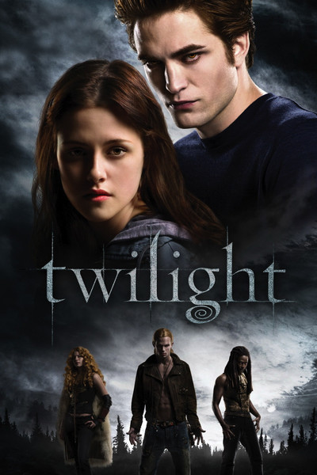

♥ HOME SWEET HOME ♥

So hello here we go, basically, here is where both of my parents raised me, and I moved here at the age of six. Our life is really simple and we are glad to live here because we have enough equipment, a pleasant neighborhood and it is easy to access many amenities here. If you wish to know the direction. You can click on the image!
♥ FAVOURITE MOVIE ♥
TWILIGHT MOVIE ♥

The first chapters of Twilight characterize Bella and Charlie's relationship, portraying protagonist Bella as strong and unselfish and her father, Charlie, as a loving but aloof father. Bella admits to various contradicting actions in her first observations after moving to Forks. She excelled in Arizona's heat, but she's opted to relocate to a cold, wet climate. She adores and misses her mother, yet she gladly abandons her to live with the father she hasn't seen since childhood. She's put herself in this awkward predicament because she prioritizes her mother's happiness over her own.
Charlie, while joyful and eager to accept his daughter, appears to Bella to be a stranger. Charlie's house is exactly as Bella recalls it, as though frozen in time. Aside from the same kitchen cupboards and furniture, Charlie still displays wedding and family photos, implying that Bella is still a little girl in Charlie's mind. Charlie's police suit and cruiser represent yet another barrier between them, as Charlie is frequently too preoccupied with work to pay much attention to Bella. Early encounters between Bella and Charlie appear strained, implying that theirs will not be an easy relationship.
Bella encounters various persons who offer information about Bella and Edward during her first days at Forks High School. While all first-person narrators are somewhat untrustworthy, Bella gives various signs that she does not fully depict herself. Her classmates' reactions to her appearance contradict her claim that she is plain. Several pupils are taken with Bella. Other characters disclose more about Edward than Edward reveals about himself. Bella's first impressions of Edward are based entirely on secondhand information. While she is aware of the Cullens, none of them speak to her personally, so all she has to go on is a rumor. Edward's strange aggressive behavior adds to the enigma around him. When Bella inquires about the Cullens, Charlie responds that they are excellent people who willingly give back to the community. Bella and Edward first notice each other from afar, but because they cannot communicate, the lesser characters assist them in getting to know each other. Bella hears rumors, and Edward hears what classmates think of Bella.
HOMETOWN CHA CHA ♥

Yoon Hye-Jin, played by Shin Min-A, is a dentist by trade. Although she is a realist, for the most part, the changes in her life are brought on by her rightfulness,
which is only a little part of her intellect. She finally settled down at the Gongjin settlement, which is located on the coast. There, Yoon Hye-Jin meets
Hong Du-Sik (Kim Sun-Ho). She develops an interest in him as a result. The people who live in his community refer to him as Chief Hong. Hong Du-Sik
possesses both good looks and intelligence. Even though he is technically unemployed, he never seems to have any free time. Hong Du-Sik is known for being
the first person to respond to a need for assistance and offer assistance.
♥ 3 THINGS ABOUT ME ♥
 |
||
| HOBBY | ||
| Listening music | ||
| Reading books | ||
| Baking cake | ||
| SPORTS | ||
| Badminton | ||
| Netball | ||
| Cycling | ||
| FAVORITE FOOD | ||
| Chicken fried rice | ||
| Sardines | ||
| Donut | ||